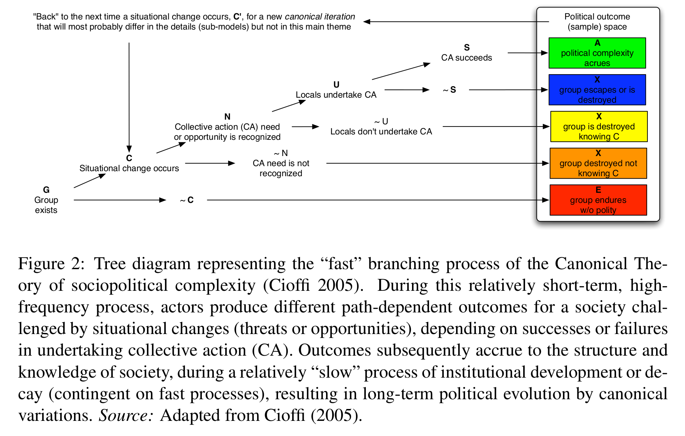
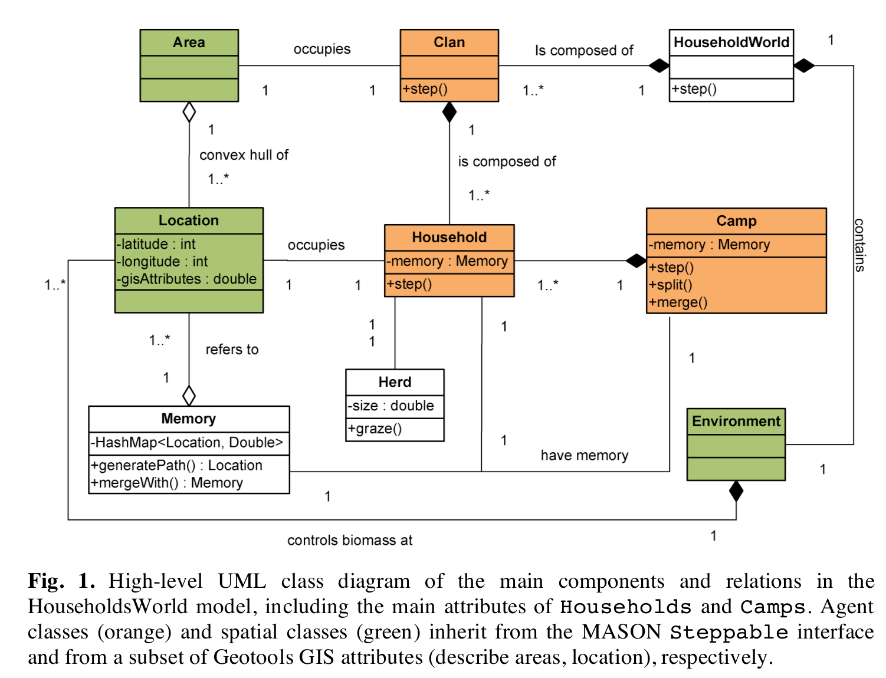
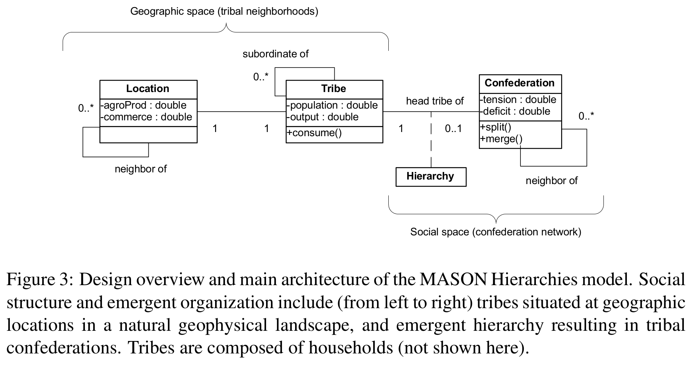
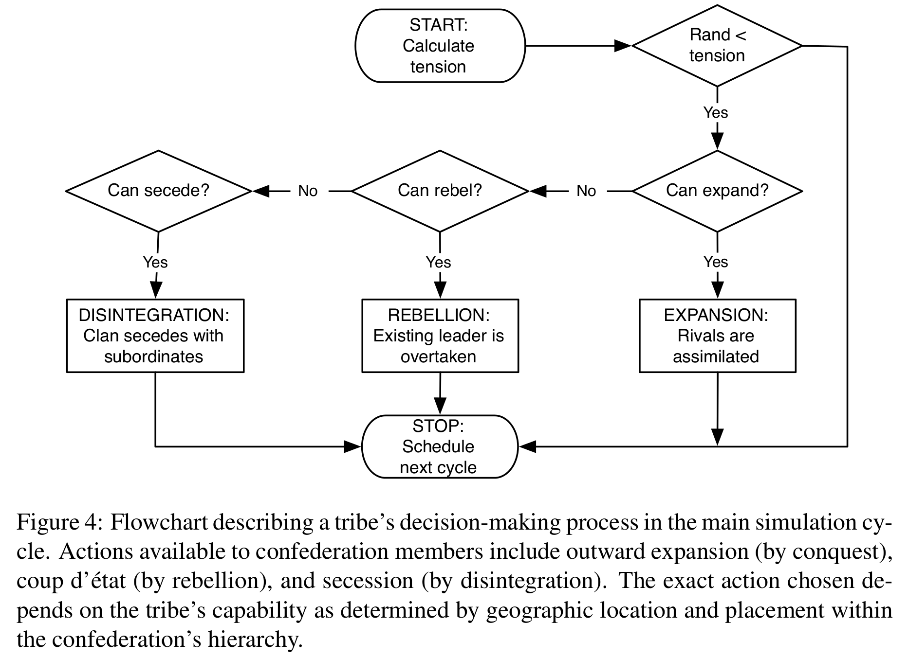

C. Cioffi-Revilla, W. Honeychurch, J.D. Rogers (2013)
CW Dillon
for Conflict Models, CSS739
Fall 2014
George Mason University


C. Cioffi-Revilla, J.D. Rogers, M. Latek (2010) [1]

C. Cioffi-Revilla, W. Honeychurch, J.D. Rogers (2013) [2]
